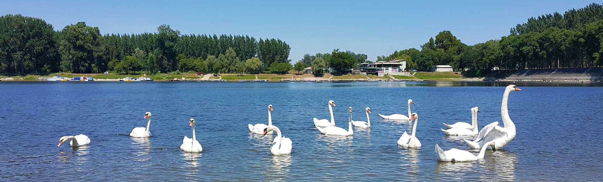

Општина Бачка Паланка је јединица локалне самоуправе у Републици Србији. Налази се у АП Војводини и припада Јужнобачком управном округу. Територија општине заузима површину од 579 km² што је сврстава у групу већих општина у Војводини. Центар општине је град Бачка Паланка.
Бачкопаланачка општина захвата пространу површину југозападне Бачке са дванаест насеља: Бачка Паланка, Челарево, Гајдобра, Нова Гајдобра, Пивнице, Деспотово, Силбаш, Параге, Обровац, Товаришево, Младеново и Карађорђево. Поред тога, њој припадају и два насељена места у Срему, Нештин и Визић.
Бачка Паланка се налази наобали реке Дунав на граници са Републиком Хрватском. На 1297. километру реке Дунав налази се мост „25 мај“ који спаја Бачку Паланку и град Илок у Републици Хрватској (ЕУ).
Бачка Паланка се налази 40 км западно од Новог Сада, 122 км северозападно од Београда, 107 км јужно од Суботице, 323км јужно од Будимпеште и 564 км југоисточноод Беча.
У општини, према последњем попису, живи и ради 55.528 становника. Најбројнији су Срби, Словаци, Мађари и Роми. У општини је поред српског језика у службеној употребии словачки језик. Становништво доминантно припада традиционалним верским заједницама у Србији: Српској православној цркви, Словачкој евангеличкој цркви аугзбуршке вероисповести у Србији и Римокатоличкој цркви.